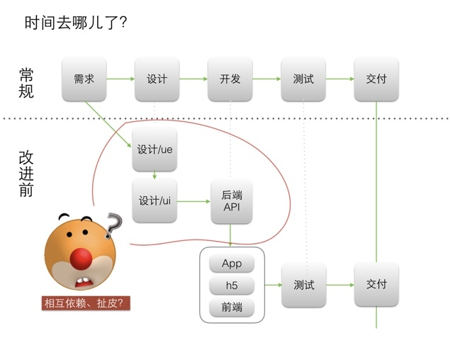
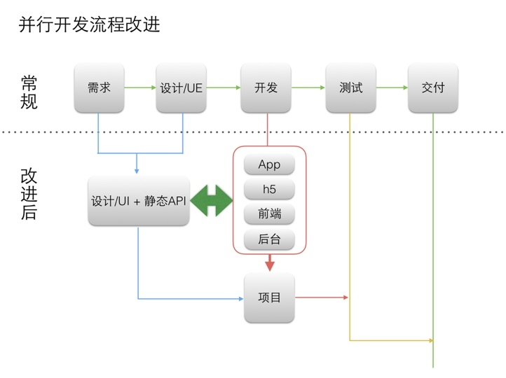
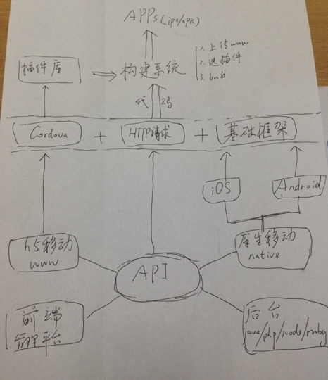
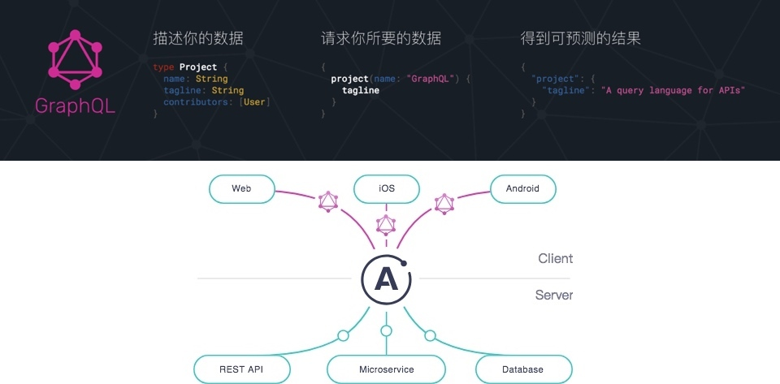
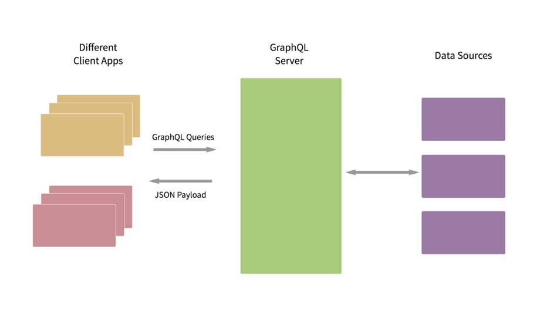
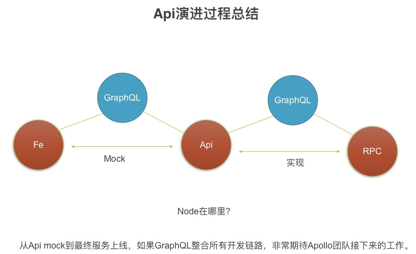
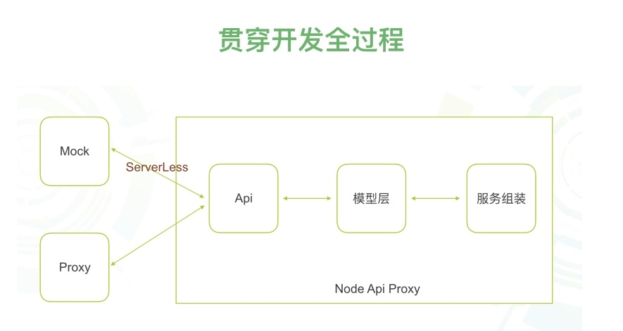
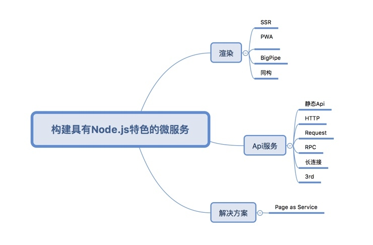
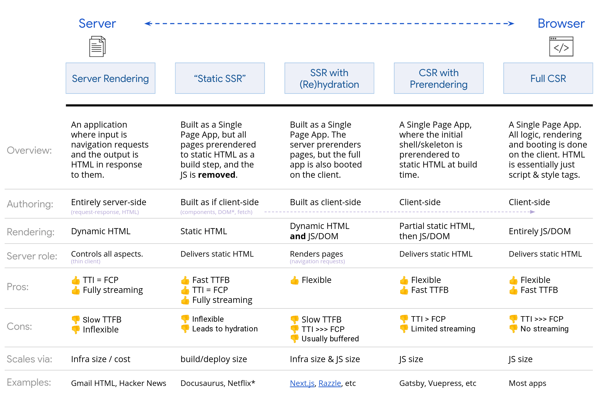

- 000 开篇词 卓越的团队，必然有一个卓越的领导者.md
- 001 你的能力模型决定你的职位.md
- 002 七位CTO纵论技术领导者核心能力.md
- 003 CEO实话实说：我需要这样的CTO.md
- 004 技术领导者不等于技术管理者.md
- 005 CTO的三重境界.md
- 006 像CEO一样思考.md
- 007 要制定技术战略，先看清局面.md
- 008 技术领导力就是成事的能力.md
- 009 CTO是商业思维和技术思维交汇的那个点.md
- 010 创业公司CTO的认知升级.md
- 011 最合适的技术才是最有价值的技术.md
- 012 谈谈CTO在商业战略中的定位.md
- 013 把脉高效执行的关键要素.md
- 014 从零开始搭建轻量级研发团队.md
- 015 定制高效研发流程.md
- 016 培养中层团队的管理认知.md
- 017 团队成长要靠技巧和体系.md
- 018 做到这四点，团队必定飞速成长.md
- 019 将企业打造成一所终身大学.md
- 020 论团队管理与共同升级.md
- 021 绩效管理的目标不仅仅是绩效考核.md
- 022 验证研发团队价值的绩效考核机制.md
- 023 产品技术团队OKR使用法则.md
- 024 996、987，程序员加班文化你怎么看？.md
- 025 建立有效的员工淘汰机制.md
- 026 让细节的病毒感染你的团队.md
- 027 如何在不同组织文化下推行技术管理.md
- 028 业务高速增长期的团队管理：知轻重、重绸缪、调缓急.md
- 029 被8成的人误解的工程师文化.md
- 030 关于工程师文化的六个问题.md
- 031 五位技术领导者的文化构建实战.md
- 032 文化是管理的那只无形之手.md
- 033 选对的人，做正确的事情.md
- 034 打好技术团队搭建的基础.md
- 035 做个合格的技术岗位面试官.md
- 036 高潜力人才的内部培养.md
- 037 技术创业该如何选择赛道.md
- 038 CTO要掌握的产品哲学：理性与人性的权衡.md
- 039 从客户价值谈技术创新.md
- 040 技术人投身创业公司之前，应当考虑些什么？.md
- 041 技术人创业前要问自己的六个问题.md
- 042 团队激励之分配好你的奖金.md
- 043 通过积分考核提升技术团队的绩效.md
- 044 空降技术高管的择业七计.md
- 045 选好人生下一站–CTO空降上篇.md
- 046 走出至暗时刻–CTO空降下篇.md
- 047 空降领导者平稳落地要做的四道题（上）.md
- 048 空降领导者平稳落地要做的四道题（下）.md
- 049 打造高效的研发组织架构：高效研发流程那些事（一）.md
- 050 你的研发流程符合你的组织架构吗？谈高效研发流程那些事（二）.md
- 051 聊聊研发流程管理中的那些坑：高效研发流程那些事（三）.md
- 052 数据如何驱动研发高效运转？谈高效研发流程那些事（四）.md
- 053 如何打造高效且敏捷的组织文化？谈高效研发流程那些亊（五）.md
- 054 打造高速运转的迭代机器：现代研发流程体系打造（一）.md
- 055 用机器打造迭代机器：现代研发流程体系打造（二）.md
- 056 有了敏捷开发，那交付期限去哪儿了？.md
- 057 敏捷中的期限之殇，软件业该怎么做？.md
- 058 如何打造个人技术品牌？.md
- 059 技术演，有章可循.md
- 060 正确对待技术演中的失误.md
- 061 刘俊强：技术最高决策者应该关注技术细节吗 .md
- 062 张溪梦：技术领袖需要具备的商业价值思维.md
- 063 未来组织形态带来的领导力挑战.md
- 064 如何判断业务价值的高低.md
- 065 如何打造高效的分布式团队？.md
- 066 如何打造有活力、持续创新的研发团队？.md
- 067 如何打造独属自己的工程师文化？.md
- 068 如何打造一个自组织团队？.md
- 069 茹炳晟：QE团队向工程效能团队转型的实践之路.md
- 070 技术、产品、管理的不同视角.md
- 071 什么样的人适合考虑管理角色.md
- 072 创业公司如何招到合适的人才.md
- 073 用数据来分析管理员工.md
- 074 为什么给了高工资，依然留不住核心员工？.md
- 075 刘俊强：一本正经教你如何毁掉一场技术演.md
- 076 内部技术会议的价值.md
- 079 程军：从0到1打造高效技术团队的方法论.md
- 080 技术Leader的持续成长.md
- 081 游舒帆：一流团队必备的商业思维能力.md
- 082 游舒帆：数据力，透过数据掌握公司经营大小事.md
- 083 游舒帆：运营力，让用户出现你期待的行为.md
- 084 游舒帆：策略力，让目标与行动具备高度一致性.md
- 085 游舒帆：敏捷力，拥抱不确定性，与VUCA共舞.md
- 086 刘俊强：管理者必备的高效会议指南（上）.md
- 087 刘俊强：管理者必备的高效会议指南（下）.md
- 088 刘俊强：做好一对一沟通的关键要素（上）.md
- 089 刘俊强：做好一对一沟通的关键要素（下）.md
- 090 程军：打造高效技术团队之招人.md
- 091 程军：打造高效技术团队之做事.md
- 092 成敏：技术负责人如何做优先级决策.md
- 093 兰军：团队研发效率低下的要因分析.md
- 094 兰军：提升产品团队研发效率的实践（上）.md
- 095 兰军：提升产品团队研发效率的实践（下）.md
- 096 阿禅：工程师转型产品经理可能踩到的坑.md
- 097 阿禅：工程师转型产品经理的必备思维.md
- 098 徐裕键：业务高速增长过程中的团队迭代.md
- 099 徐裕键：业务高速增长过程中的技术演进.md
- 100 徐裕键：团队文化建设，保持创业公司的战斗力.md
- 101 刘俊强：领导力提升指南之培养积极的态度.md
- 102 姚从磊：巧用AARRR模型，吸引优秀技术人才（一）.md
- 103 姚从磊：巧用AARRR模型，吸引优秀技术人才（二）.md
- 104 姚从磊：巧用 AARRR 模型，吸引优秀技术人才（三）.md
- 105 姚从磊：巧用 AARRR 模型，吸引优秀技术人才（四）.md
- 106 程军：技术人的「知行合一」（一）.md
- 107 刘俊强：消除压力的七种方法.md
- 108 谢呈：技术高手转身创业的坑和坡.md
- 109 谢呈：关于垂直互联网创业的一些经验之谈.md
- 110 成敏：创业公司为什么会技术文化产品缺失.md
- 111 蔡锐涛：从0到1再到100，创业不同阶段的技术管理思考.md
- 112 刘俊强：必知绩效管理知识之绩效管理循环.md
- 113 程军：技术人的「知行合一」（二）.md
- 114 成敏：谈谈不同阶段技术公司的特点.md
- 115 成敏：打造优秀团队与文化的三个推手.md
- 116 刘俊强：必知绩效管理知识之绩效目标的制定.md
- 117 程军：技术人的「知行合一」（三）.md
- 118 吴铭：成本评估是技术leader的关键素质.md
- 119 汤力嘉：CTO如何进行产品决策（一）.md
- 120 刘俊强：必知绩效管理知识之绩效数据收集（上）.md
- 121 刘俊强：必知绩效管理知识之绩效数据收集（下）.md
- 122 黄伟坚：创业中那些永远回避不了的问题.md
- 123 黄伟坚：用系统性思维看待创业.md
- 124 刘俊强：必知绩效管理知识之评定绩效.md
- 125 洪强宁：从程序员到架构师，从架构师到CTO（一）.md
- 126 洪强宁：从程序员到架构师，从架构师到CTO（二）.md
- 127 刘俊强：必知绩效管理知识之绩效沟通（一）.md
- 128 王坚：年轻人永远是创新的主体.md
- 129 刘俊强：必知绩效管理知识之绩效沟通（二）.md
- 130 刘俊强：必知绩效管理知识之绩效沟通（三）.md
- 131 汤力嘉：CTO如何在产品方面进行决策（二）.md
- 132 徐函秋：转型技术管理者初期的三大挑战（一）.md
- 133 徐函秋：转型技术管理者初期的三大挑战（二）.md
- 134 刘建国：我各方面做得都很好，就是做不好向上沟通.md
- 135 钮博彦：软件研发度量体系建设（一）.md
- 136 钮博彦：软件研发度量体系建设（二）.md
- 137 成敏：创业者不要成为自己公司产品技术文化的破坏者.md
- 138 于艺：以生存为核心，B端产品的定位心法.md
- 139 成敏：创业者应该具备的认知与思维方式.md
- 140 袁店明：创业产品必须迈过的鸿沟.md
- 141 徐毅：五星级软件工程师的高效秘诀（一）.md
- 142 徐毅：五星级软件工程师的高效秘诀（二）.md
- 143 徐毅：技术Leader应该具备的能力或素质.md
- 144 于艺：如何提升自己的能力与动力.md
- 145 李列为：技术人员的商业思维.md
- 146 刘天胜：打造高效团队，关键在于平衡人、事和时间（一）.md
- 147 刘天胜：打造高效团队，关键在于平衡人、事和时间（二）.md
- 148 肖德时：创业团队技术领导者必备的十个领导力技能（上）.md
- 149 肖德时：创业团队技术领导者必备的十个领导力技能（下）.md
- 150 暨家愉：技术人如何快乐的自我成长（上）.md
- 151 暨家愉：技术人如何快乐的自我成长（下）.md
- 152 施翔：如何打造7 24高效交付通道（上）.md
- 153 施翔：如何打造7 24高效交付通道（下）.md
- 154 谢东升：说说技术管理者从外企到民企的挑战.md
- 155 王可光：如何搭建初创团队之人才关.md
- 156 成敏：技术人转型管理的两大秘诀.md
- 157 成敏：技术人才的管理公式.md
- 158 胡峰：人到中年：失业与恐惧.md
- 159 黄云：技术管理者如何科学的做好向上管理.md
- 160 胡键：创业公司需要高凝聚力高绩效的技术团队.md
- 161 卢亿雷：企业发展的不同阶段，该如何打造高效的研发流程体系.md
- 162 王海亮：提升技术团队效率的5个提示（上）.md
- 163 王海亮：提升技术团队效率的5个提示（下）.md
- 164 陈崇磐：心理成熟度 - 创业公司识人利器.md
- 165 陈崇磐：管事与管人 - 如何避开创业公司组队陷阱.md
- 166 俞圆圆：合格CTO应该做好的5件事（上）.md
- 167 俞圆圆：合格CTO应该做好的5件事（下）.md
- 168 余加林：从技术人到创业合伙人必备的三个维度的改变.md
- 169 高琦：如何给研发打绩效不头疼而又公正？（上）.md
- 170 高琦：如何给研发打绩效不头疼而又公正？（下）.md
- 171 邱良军：如何有效地找到你心仪的人才.md
- 172 于人：研发团队人均产能3年提升3.6倍的秘诀（上）.md
- 173 于人：研发团队人均产能3年提升3.6倍的秘诀（下）.md
- 174 邱良军：打造高效技术团队，你准备好了吗！.md
- 175 邱良军：打造高效技术团队的人才招聘攻略.md
- 176 胡键：创业公司如何打造高凝聚力高绩效的技术团队：组织篇.md
- 177 胡键：创业公司如何打造高凝聚力高绩效的技术团队：工具篇.md
- 178 马连浩：用人的关键在于用人所长，而非改人之短.md
- 179 张矗：技术管理者必经的几个思维转变.md
- 180 钟忻：成为温格-聊聊如何当好CTO.md
- 181 姚威：技术团队管理中关于公平的五个核心准则.md
- 182 谢文杰：区块链的下一个十年.md
- 183 薛文植：技术管理的本质-要做尊重人性的管理.md
- 184 狼叔：2019年前端和Node的未来-大前端篇（上）.md
- 185 狼叔：2019年前端和Node的未来-大前端篇（下）.md
- 186 赵晓光：如何培养团队竞争力（上）.md
- 187 赵晓光：如何培养团队竞争力（下）.md
- 188 张嵩：从心理学角度看待小中型团队的管理.md
- 189 狼叔：2019年前端和Node的未来-Node.js篇（上）.md
- 190 狼叔：2019年前端和Node的未来-Node.js篇（下）.md
- 191 肖冰：如何建立高信任度的团队.md
- 192 崔俊涛：如何做好技术团队的激励（上）.md
- 193 崔俊涛：如何做好技术团队的激励（下）.md
- 194 刘俊强：2019年云计算趋势对技术人员的影响.md
- 195 吴晖：企业B2B服务打磨的秘诀-ESI.md
- 196 邱良军：关于做好技术团队管理的几点思考.md
- 197 邱良军：做好研发管理的3个关键.md
- 198 徐林：通过快速反馈建立充满信任的技术团队.md
- 199 宝玉：怎样平衡软件质量与时间成本范围的关系？.md
- 200 邱良军：沟通，沟通，还是沟通（上）.md
- 201 邱良军：沟通，沟通，还是沟通（下）.md
- 202 陈嘉佳：奈飞文化宣言（上）.md
- 203 陈嘉佳：奈飞文化宣言（下）.md
- 204 邱良军：从小处着眼，修炼文化价值观.md
- 205 邵浩：人工智能新技术如何快速发现及落地（上）.md
- 206 邵浩：人工智能新技术如何快速发现及落地（下）.md
- 207 许良：科创板来了，我该怎么办？.md
- 208 陈阳：科创板投资，未来哪些行业受益最大？.md
- 大咖对话 万玉权：如何招到并培养核心人才.md
- 大咖对话 万玉权：高效团队的关键，以目标为导向，用数据来说话.md
- 大咖对话 不可替代的Java：生态与程序员是两道护城河.md
- 大咖对话 从几个工程师到2000多个工程师的技术团队成长秘诀.md
- 大咖对话 以产生价值判断工程师贡献–读者留言精选.md
- 大咖对话 余沛：打造以最佳交付实践为目标的技术导向.md
- 大咖对话 余沛：进阶CTO必备的素质与能力.md
- 大咖对话 刘俊强：云计算时代技术管理者的应对之道.md
- 大咖对话 刘俊强：谈谈我对2019年云计算趋势的看法.md
- 大咖对话 创业就是把自己过去的经验快速的产品化.md
- 大咖对话 如何打造自我驱动型的技术团队？.md
- 大咖对话 如何高效管理8000多规模的技术团队.md
- 大咖对话 季昕华：以不变的目的应对多变的技术浪潮.md
- 大咖对话 对人才的长期投资是人才体系打造的根本.md
- 大咖对话 张建锋：创业可以快而大，也可以小而美.md
- 大咖对话 彭跃辉：保持高效迭代的团队是如何炼成的.md
- 大咖对话 彭跃辉：解决用户痛点就是立足于市场的秘诀.md
- 大咖对话 徐毅：如何提升员工的活力与动力？.md
- 大咖对话 徐毅：打造高效研发团队的五个维度及相关实践.md
- 大咖对话 技术人创业前衡量自我的3P3C模型.md
- 大咖对话 技术人真正需要的是升维思考.md
- 大咖对话 技术管理者应该向优秀的体育教练学习.md
- 大咖对话 未来技术负责人与首席增长官将如何协作？.md
- 大咖对话 李昊：创业公司如何做好技术团队绩效考核？.md
- 大咖对话 李智慧：技术人如何应对互联网寒冬.md
- 大咖对话 杨育斌：技术领导者要打造技术团队的最大化价值.md
- 大咖对话 池建强：做产品不要执着于打造爆款.md
- 大咖对话 焦烈焱：从四个维度更好的激发团队创造力.md
- 大咖对话 玉攻：四个维度看小程序与App的区别.md
- 大咖对话 王坚：我从不吃后悔药.md
- 大咖对话 王平：从人、事、价值观、文化等维度看技术团队转型.md
- 大咖对话 王平：如何快速搭建核心技术团队.md
- 大咖对话 王鹏云：技术人创业该如何选择合伙人？.md
- 大咖对话 王鹏云：管理方式的差异是为了更好地实现企业商业价值.md
- 大咖对话 王龙：利用 C 端连接 B 端实现产业互联网是下半场的重中之重.md
- 大咖对话 童剑：用合伙人管理结构打造完美团队.md
- 大咖对话 管理者是首席铲屎官？.md
- 大咖对话 胡哲人：技术人创业要跨过的思维坎.md
- 大咖对话 袁店明：如何将打造自组织团队落诸实践.md
- 大咖对话 袁店明：打造高效研发团队的五个要点.md
- 大咖对话 让团队成员持续的enjoy.md
- 大咖对话 谢孟军：技术人如何建立自己的个人品牌.md
- 大咖对话 谭待：架构的本质是折中.md
- 大咖对话 陈天石：AI 芯片需要技术和资本的双重密集支撑.md
- 大咖对话 陈斌：如何打造高创造力、高动力的技术团队.md
- 大咖对话 陶真：技术人要爱上问问题，而不是自己的解决方案.md
- 大咖对话 韩军：CTO转型CEO如何转变思路.md
- 大咖对话 项目成功的秘诀–技术产品双头负责制.md
- 大咖对话 顾旻曼：投资时我们更多地是在找优秀的团队.md
- 大咖对话 高斌：过分渲染会过度拉高大众对人工智能的期望.md
- 大咖问答 发现下一个小米，不是只能靠运气.md
- 大咖问答 打造自己的个人品牌，你也可以.md
- 新春特辑1 卓越CTO必备的能力与素质.md
- 新春特辑2 如何成长为优秀的技术管理者？.md
- 新春特辑3 如何打造高质效的技术团队？.md
- 新春特辑4 如何打造高效的研发流程与文化？.md
- 新春特辑5 如何做好人才的选育用留？.md
- 温故而知新 一键直达，六大文章主题索引.md
- 结束篇 即使远隔千山万水，也要乘风与你同往.md
189 狼叔：2019年前端和Node的未来-Node.js篇（上）
你好，我是阿里巴巴前端技术专家狼叔，前两篇文章，我分享了大前端的现状和未来，接下来的两篇文章，我将会注重分享一些跟Node.js结合比较密切的点。
Node.js
Node.js在大前端布局里意义重大，除了基本构建和Web服务外，这里我还想讲2点。首先它打破了原有的前端边界，之前应用开发只分前端和API开发。但通过引入Node.js做BFF这样的API proxy中间层，使得API开发也成了前端的工作范围，让后端同学专注于开发RPC服务，很明显这样明确的分工是极好的。其次，在前端开发过程中，有很多问题不依赖服务器端是做不到的，比如场景的性能优化，在使用React后，导致bundle过大，首屏渲染时间过长，而且存在SEO问题，这时候使用Node.js做SSR就是非常好的。当然，前端开发Node.js还是存在一些成本，要了解运维等，会略微复杂一些，不过也有解决方案，比如Servlerless就可以降级运维成本，又能完成前端开发。直白点讲，在已有Node.js拓展的边界内，降级运维成本，提高开发的灵活性，这一定会是一个大趋势。
2018 年Node.js发展的非常好，InfoQ曾翻译过一篇文章《2018 Node.js 用户调查报告显示社区仍然在快速成长》。2018 年 5 月 31 日，Node.js 基金会发布了2018 年用户调查报告，涵盖了来自 100 多个国家 1600 多名参与者的意见。报告显示，Node.js的使用量仍然在快速增长，超过¾的参与者期望在来年扩展他们的使用场景，另外和2017 年的报告相比，Node 的易学程度有了大幅提升。
该调查远非 Node 快速增长的唯一指征。根据ModuleCounts.com的数据，Node 的包注册中心 NPM 每天会增加 507 个包，相比下一名要多 4 倍多。2018 年 Stack Overflow 调查也有类似的结果，JavaScript 是使用最广泛的语言，Node.js 是使用最广泛的框架。
本节我会主要分享一些跟Node.js结合比较密切的点：首先介绍一下 API演进与GraphQL，然后讲一下SSR如何结合API落地，构建出具有Node.js特色的服务，然后再简要介绍下Node.js的新特性、新书等，最后聊聊我对 Deno的一点看法。
API演进与看起来较火的GraphQL
书本上的软件工程在互联网高速发展的今天已经不那么适用了，尤其是移动开发火起来之后，所有企业都崇尚敏捷开发，快鱼吃慢鱼，甚至觉得2周发一个迭代版本都慢，后面组件化和热更新就是这样产生的。综上种种，我们对传统的软件工程势必要重新思考，如何提高开发和产品迭代效率成为重中之重。
先反思一下，开发为什么不那么高效？
从传统软件开发过程中，可以看到，需求提出后，先要设计出ui/ue，然后后端写接口，再然后APP、H5和前端这3端才能开始开发，所以串行的流程效率极低。

于是就有了mock api的概念。通过静态API模拟，使得需求和ue出来之后，就能确定静态API，造一些模拟数据，这样3端+后端就可以同时开发了。这曾经是提效的非常简单直接的方式。

静态API实现有很多种方式，比如简单的基于 Express / Koa 这样的成熟框架，也可以采用专门的静态API框架，比如著名的 typicode/json-server，想实现REST API，你只需要编辑db.json，放入你的数据即可。
{
"posts": [
{ "id": 1, "title": "json-server", "author": "typicode" }
],
"comments": [
{ "id": 1, "body": "some comment", "postId": 1 }
],
"profile": { "name": "typicode" }
}
启动服务器
$ json-server --watch db.json
此时访问网址 http://localhost:3000/posts/1，即我们刚才仿造的静态API 接口，返回数据如下：
{ "id": 1, "title": "json-server", "author": "typicode" }
还有更好的解决方案，比如YApi ，它是一个可本地部署的、打通前后端及QA的、可视化的接口管理平台（http://yapi.demo.qunar.com/ ）。
其实，围绕API我们可以做非常多的事儿，比如根据API生成请求，对服务器进行反向压测，甚至是check后端接口是否异常等。很明显，这对前端来说是极其友好的。下面是我几年前画的图，列出了我们能围绕API做的事儿，至今也不算过时。

通过社区，我们可以了解到当下主流的API演进过程。
1.GitHub v3的restful api，经典rest； 2.微博API，非常传统的json约定方式； 3.在GitHub的v4版本里，使用GraphQL来构建API，这也是个趋势。
GraphQL目前看起来比较火，那GitHub使用GraphQL到底解决的是什么问题呢？
GraphQL 既是一种用于 API 的查询语言也是一个满足你数据查询的运行时
下面看一个最简单的例子：
- 首先定义一个模型；
- 然后请求你想要的数据；
- 最后返回结果。
很明显，这和静态API模拟是一样的流程。但GraphQL要更强大一些，它可以将这些模型和定义好的API和后端很好的集成。于是GraphQL就统一了静态API模拟和和后端集成。

开发者要做的，只是约定模型和API查询方法。前后端开发者都遵守一样的模型开发约定，这样就可以简化沟通过程，让开发更高效。

如上图所示，GraphQL Server前面部分，就是静态API模拟。GraphQL Server后面部分就是与各种数据源进行集成，无论是API、数据还是微服务。是不是很强大？
下面我们总结一下API的演进过程。
传统方式：Fe模拟静态API，后端参照静态API去实习rpc服务。
时髦的方式：有了GraphQL之后，直接在GraphQL上编写模型，通过GraphQL提供静态API，省去了之前开发者自己模拟API的问题。有了GraphQL模型和查询，使用GraphQL提供的后端集成方式，后端集成更简单，于是GraphQL成了前后端解耦的桥梁。集成使用的就是基于Apollo 团队的 GraphQL 全栈解决方案，从后端到前端提供了对应的 lib ，使得前后端开发者使用 GraphQL 更加的方便。

GraphQL本身是好东西，和Rest一样，我的担心是落地不一定那么容易，毕竟接受约定和规范是很麻烦的一件事儿。可是不做，又怎么能进步呢？
构建具有Node.js特色的服务

2018年，有一个出乎意料的一个实践，就是在浏览器可以直接调用grpc服务。RPC服务暴漏 HTTP 接口，这事儿API网关就可以做到。事实上，gRPC-Web也是这样做的。
如果只是简单透传，意义不大。大多数情况，我们还是要在Node.js端做服务聚合，继而为不同端提供不一样的API。这是比较典型的API Proxy用法，当然也可以叫BFF(backend for frontend)。
从前端角度看，渲染和API是两大部分，API部分前端自己做有两点好处：1.前端更了解前端需求，尤其是根据ui/ue设计API；2.让后端更专注于服务，而非API。需求变更，能不折腾后端就尽量不要去折腾后端。这也是应变的最好办法。
构建具有Node.js特色的微服务，也主要从API和渲染两部分着手为主。如果说能算得上创新的，那就是API和渲染如何无缝结合，让前端开发有更好的效率和体验。

Server Side Render
尽管Node.js中间层可以将 RPC 服务聚合成 API，但前端还是前端，API还是API。那么如何能够让它们连接到一起呢？比较好的方式就是通过SSR进行同构开发。服务端创新有限，搞来搞去就是不断的升v8，提升性能，新东西不多。今天我最头疼的是，被Vue/React/Angular三大框架绑定，喜忧参半，既想用组件化和双向绑定（或者说不得不用），又希望保留足够的灵活性。大家都知道SSR因为事件/timer和过长的响应时间而无法有很高的QPS（够用，优化难），而且对API聚合处理也不是很爽。更尴尬的是SSR下做前后端分离难受，不做也难受，到底想让人咋样？
对于任何新技术都是一样的，不上是等死，上了是找死。目前是在找死的路上努力的找一种更舒服的死法。

目前，我们主要采用React做SSR开发，上图中的5个步骤都经历过了（留到QCon广州场分享），这里简单介绍一下React SSR。React 16现在支持直接渲染到节点流。渲染到流可以减少你内容的第一个字节（TTFB）的时间，在文档的下一部分生成之前，将文档的开头至结尾发送到浏览器。当内容从服务器流式传输时，浏览器将开始解析HTML文档。渲染到流的另一个好处是能够响应背压。 实际上，这意味着如果网络被备份并且不能接受更多的字节，那么渲染器会获得信号并暂停渲染，直到堵塞清除。这意味着你的服务器会使用更少的内存，并更加适应I / O条件，这两者都可以帮助你的服务器拥有具有挑战性的条件。
在Node.js里，HTTP是采用Stream实现的，React SSR可以很好的和Stream结合。比如下面这个例子，分3步向浏览器进行响应。首先向浏览器写入基本布局HTML，然后写入React组件<MyPage/>，然后写入</div></body></html>。
// 服务器端
// using Express
import { renderToNodeStream } from "react-dom/server"
import MyPage from "./MyPage"
app.get("/", (req, res) => {
res.write("<!DOCTYPE html><html><head><title>My Page</title></head><body>");
res.write("<div id='content'>");
const stream = renderToNodeStream(<MyPage/>);
stream.pipe(res, { end: false });
stream.on('end', () => {
res.write("</div></body></html>");
res.end();
});
});
这段代码里需要注意stream.pipe(res, { end: false })，res本身是Stream，通过pipe和<MyPage/>返回的stream进行绑定，继而达到React组件嵌入到HTTP流的目的。
上面是服务器端的做法，与此同时，你还需要在浏览器端完成组件绑定工作。react-dom里有2个方法，分别是render和hydrate。由于这里采用renderToNodeStream，和hydrate结合使用会更好。当MyPage组件的html片段写到浏览器里，你需要通过hydrate进行绑定，代码如下。
// 浏览器端
import { hydrate } from "react-dom"
import MyPage from "./MyPage"
hydrate(<MyPage/>, document.getElementById("content"))
可是，如果有多个组件，需要写入多次流呢？使用renderToString就简单很多，普通模板的方式，流却使得这种玩法变得很麻烦。
伪代码
const stream1 = renderToNodeStream(<MyPage/>);
const stream2 = renderToNodeStream(<MyTab/>);
res.write(stream1)
res.write(stream2)
res.end()
核心设计是先写入布局，然后写入核心模块，然后再写入其他模块。
- 1. 布局(大多数情况静态html直接吐出，有可能会有请求)；
- 1. Main（大多数情况有请求）；
- 1. Others。
于是
class MyComponent extends React.Component {
fetch(){
//获取数据
}
parse(){
//解析，更新state
}
render(){
...
}
}
在调用组件渲染之前，先获得renderToNodeStream，然后执行fetch和parse方法，取到结果之后再将Stream写入到浏览器。当前端接收到这个组件编译后的html片段后，就可以根据containerID直接写入，当然如果需要，你也可以根据服务器端传过来的data进行定制。
前后端如何通信、服务端代码如何打包、css如何直接插入、和eggjs如何集成，这是目前我主要做的事儿。对于API端已经很成熟，对于SSR简单的做法也是有的，比如next.js通过静态方法getInitialProps完成接口请求，但只适用比较简单的应用场景（一键切换CSR和SSR，这点设计的确实是非常巧妙的）。但是如果想更灵活，处理更负责的项目，还是很有挑战的，需要实现上面更为复杂的模块抽象。在2019年，应该会补齐这块，为构建具有Node.js特色的服务再拿下一块高地。
小结一下，本文主要分享了API演进与GraphQL，SSR如何结合API落地，以及如何构建出具有Node.js特色的服务等前端与Node.js紧密相关的内容，下一篇文章中，我将主要分享一些Node.js的新特性，以及我对大前端、Node.js未来的一点看法，欢迎继续关注，也欢迎留言与我多多交流。
作者简介
狼叔（网名i5ting），现为阿里巴巴前端技术专家，Node.js 技术布道者，Node全栈公众号运营者。曾就职于去哪儿、新浪、网秦，做过前端、后端、数据分析，是一名全栈技术的实践者，目前主要关注技术架构和团队梯队建设方向。即将出版《狼书》3卷。
© 2019 - 2023 Liangliang Lee. Powered by gin and hexo-theme-book.